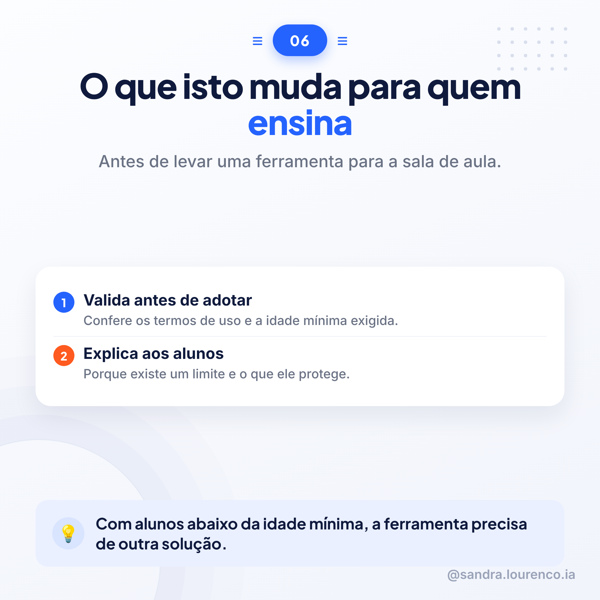

Tema Sandra: EducaçãoFonte: Guia UNESCO 2023 (IAGen)8 slides
Carrossel sobre a idade mínima recomendada para crianças e adolescentes falarem sozinhos com IA generativa: o que já exigem os termos de uso, o que propõe a UNESCO e o que isto muda para quem trabalha em educação.
Slides, pela ordem
8 imagens
01 · Capa
02
03
04
05
06

07
08 · Fecho
Legendas e guião
copiar e colar
💼LinkedIn
Qual é a idade mínima para falar sozinho com um chatbot de IA generativa? A pergunta já tem resposta parcial, mas quase ninguém a aplicou ainda.
Hoje, os termos do ChatGPT exigem 13 anos. Menores de 18 precisam de autorização dos pais. Mas esta regra vem de uma lei norte-americana de 1998, pensada muito antes das redes sociais e da IA generativa existirem. Na União Europeia, o RGPD já pede 16 anos para usar redes sociais sem autorização dos pais.
A UNESCO entrou nesta conversa com uma recomendação: o limite mínimo deve ser de 13 anos para conversas independentes com IA generativa. Mas deixa claro que cabe a cada país decidir, com debate público. E avisa: dizer a idade não é verificar a idade. Essa responsabilidade devia ser dos fornecedores. Acompanhar os filhos continua a ser dos pais.
Para quem trabalha em escolas, a pergunta é prática: antes de levar qualquer ferramenta para a sala de aula, vale confirmar a idade mínima exigida e explicar aos alunos porque ela existe.
Vem do "Guia para a IA generativa na educação e na pesquisa", da UNESCO.
#InteligenciaArtificial #Educacao #ProtecaoInfantil
🎵TikTok / Instagram
Sabes qual é a idade mínima para usar IA generativa sozinho? A resposta pode surpreender-te.
O ChatGPT já exige 13 anos, com autorização dos pais até aos 18. Mas essa regra vem de uma lei de 1998, de antes das redes sociais existirem.
A UNESCO diz que o mínimo deve ser 13 anos, mas que cada país tem de decidir e regulamentar isto. E avisa: escrever a idade não chega, é preciso verificar a sério.
Se trabalhas com crianças ou adolescentes, vale a pena saber isto antes de levares uma ferramenta de IA para a sala de aula.
Desliza e vê os números.
#InteligenciaArtificial #Educacao #Escola
🎬Guião de vídeo (HeyGen) · 6 cenas
Cena 1 — GanchoSabes qual é a idade mínima para falar sozinho com um chatbot de inteligência artificial generativa? A resposta ainda está a ser definida, país a país.
Cena 2 — Conteúdo (as regras de hoje)Hoje, os termos do ChatGPT exigem pelo menos treze anos. Quem tem menos de dezoito precisa de autorização dos pais ou do responsável legal.
Cena 3 — Conteúdo (de onde vem a regra)Esta regra vem de uma lei dos Estados Unidos, de mil novecentos e noventa e oito. Foi pensada antes das redes sociais e muito antes da inteligência artificial generativa existirem.
Cena 4 — Conteúdo (o que diz a UNESCO)A UNESCO recomenda um mínimo de treze anos para conversas independentes com inteligência artificial generativa. Mas deixa a decisão final a cada país, com debate público.
Cena 5 — Conteúdo (quem verifica)E avisa uma coisa importante: dizer a idade não é verificar a idade. Essa responsabilidade devia ser dos fornecedores das ferramentas. Acompanhar continua a ser papel dos pais.
Cena 6 — Fecho e chamada à açãoAntes de levares uma ferramenta de inteligência artificial para a sala de aula, confirma a idade mínima exigida. Guarda este carrossel e segue para mais conteúdos sobre inteligência artificial na educação.
Nota para o HeyGen: usar os PNGs do carrossel (carrossel_20_s1.png a carrossel_20_s8.png) como fundo de cada cena, pela ordem, com o avatar a narrar por cima.